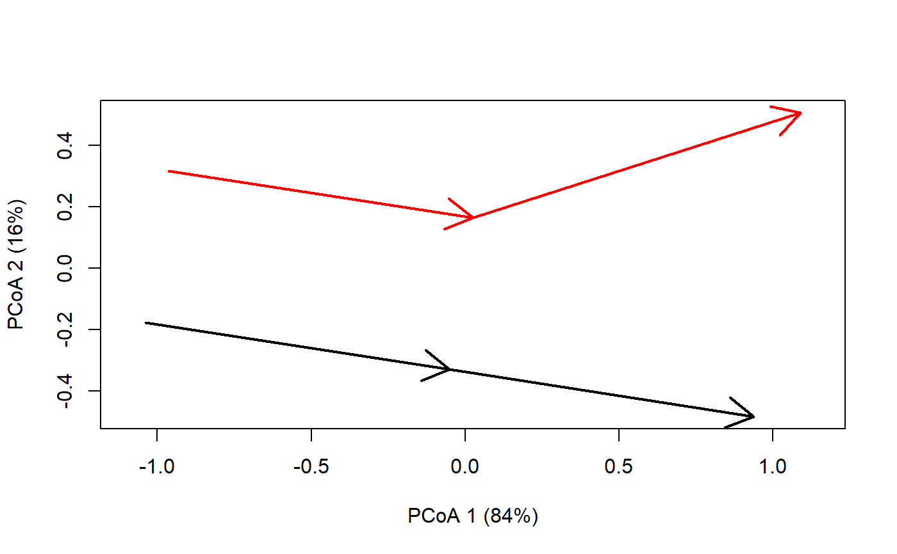

trajectories.RdCommunity trajectory analysis (CTA) is a framework to analyze community dynamics described as trajectories in a chosen space of community resemblance (De Cáceres et al. 2019). CTA takes trajectories as objects to be analyzed and compared geometrically. Given a distance matrix between community states, the set of functions for CTA are:
Functions segmentDistances and trajectoryDistances calculate the distance between pairs of directed segments and community trajectories, respectively.
Function trajectoryLengths calculates lengths of directed segments and total path lengths of trajectories.
Function trajectoryAngles calculates the angle between consecutive pairs of directed segments or between segments of ordered triplets of points.
Function trajectoryPCoA performs principal coordinates analysis (cmdscale) and draws trajectories in the ordination scatterplot.
Function trajectoryPlot Draws trajectories in a scatterplot corresponding to the input coordinates.
Function trajectoryProjection projects a set of target points onto a specified trajectory and returns the distance to the trajectory (i.e. rejection) and the relative position of the projection point within the trajectory.
Function trajectoryConvergence performs the Mann-Kendall trend test on the distances between trajectories (symmetric test) or the distance between points of one trajectory to the other.
Function trajectorySelection allows selecting the submatrix of distances corresponding to a given subset of trajectories.
Function trajectoryDirectionality returns (for each trajectory) a statistic that measures directionality of the whole trajectory.
Function centerTrajectories shifts all trajectories to the center of the compositional space and returns a modified distance matrix.
Function is.metric checks whether the input dissimilarity matrix is metric (i.e. all triplets fulfill the triangle inequality).
segmentDistances(d, sites, surveys = NULL, distance.type = "directed-segment", add = TRUE, verbose = FALSE) trajectoryDistances(d, sites, surveys = NULL, distance.type = "DSPD", symmetrization = "mean", add = TRUE, verbose = FALSE) trajectoryLengths(d, sites, surveys = NULL, verbose = FALSE) trajectoryAngles(d, sites, surveys = NULL, all = FALSE, stats = TRUE, add = TRUE, verbose = FALSE) trajectorySelection(d, sites, selection) trajectoryPCoA(d, sites, surveys = NULL, selection = NULL, traj.colors = NULL, axes = c(1, 2), ...) trajectoryPlot(x, sites, surveys = NULL, selection = NULL, traj.colors = NULL, axes = c(1, 2), ...) trajectoryProjection(d, target, trajectory, tol = 1e-06, add = TRUE) trajectoryConvergence(d, sites, surveys = NULL, symmetric = FALSE, add = TRUE, verbose = FALSE) trajectoryDirectionality(d, sites, surveys = NULL, add = TRUE, verbose = FALSE) centerTrajectories(d, sites, verbose = FALSE) is.metric(d, tol = 1e-04)
| d | A symmetric |
|---|---|
| sites | A vector indicating the site corresponding to each community state. |
| surveys | A vector indicating the survey corresponding to each community state (only necessary when surveys are not in order). |
| distance.type | The type of distance index to be calculated (Besse et al. 2016; De Cáceres et al. submitted). For
whereas for
|
| add | Flag to indicate that constant values should be added (local transformation) to correct triplets of distance values that do not fulfill the triangle inequality. |
| verbose | Provides console output informing about process (useful for large dataset). |
| symmetrization | Function used to obtain a symmetric distance, so that DSPD(T1,T2) = DSPD(T2,T1) (e.g., |
| all | A flag to indicate that angles are desired for all triangles (i.e. all pairs of segments) in the trajectory. If FALSE, angles are calculated for consecutive segments only. |
| stats | A flag to indicate that circular statistics are desired (mean, standard deviation and mean resultant length, i.e. rho) |
| selection | A character vector of sites, a numeric vector of site indices or logical vector of the same length as |
| traj.colors | A vector of colors (one per site). If |
| axes | The pair of principal coordinates to be plotted. |
| ... | Additional parameters for function |
| x | A data.frame or matrix where rows are community states and columns are coordinates in an arbitrary space |
| target | An integer vector of the community states to be projected. |
| trajectory | An integer vector of the trajectory onto which target states are to be projected. |
| tol | Numerical tolerance value to determine that projection of a point lies within the trajectory. |
| symmetric | A logical flag to indicate a symmetric convergence comparison of trajectories. |
Function trajectoryDistances returns an object of class dist containing the distances between trajectories (if symmetrization = NULL then the object returned is of class matrix).
Function trajectorySegments returns a list with the following elements:
Dseg: Distance matrix between segments.
Dini: Distance matrix between initial points of segments.
Dfin: Distance matrix between final points of segments.
Dinifin: Distance matrix between initial points of one segment and the final point of the other.
Dfinini: Distance matrix between final points of one segment and the initial point of the other.
Function trajectoryLengths returns a data frame with the length of each segment on each trajectory and the total length of all trajectories. Function trajectoryPCoA returns the result of calling cmdscale.
Function trajectoryAngles returns a data frame with angle values on each trajectory. If stats=TRUE, then the mean, standard deviation and mean resultant length of those angles are also returned.
Function trajectoryPCoA returns the result of calling cmdscale.
Function trajectoryProjection returns a data frame with the following columns:
distanceToTrajectory: Distances to the trajectory, i.e. rejection (NA for target points whose projection is outside the trajectory).
segment: Segment that includes the projected point (NA for target points whose projection is outside the trajectory).
relativePosition: Relative position of the projected point within the trajectory, i.e. values from 0 to 1 with 0 representing the start of the trajectory and 1 representing the end (NA for target points whose projection is outside the trajectory).
Function trajectoryConvergence returns a list with two elements:
tau: A matrix with the statistic (Mann-Kendall's tau) of the convergence/divergence test between trajectories. If symmetric=TRUE then the matrix is square. Otherwise the statistic of the test of the row trajectory approaching the column trajectory.
p.value: A matrix with the p-value of the convergence/divergence test between trajectories. If symmetric=TRUE then the matrix is square. Otherwise the p-value indicates the test of the row trajectory approaching the column trajectory.
Function trajectoryDirectionality returns a vector with directionality values (one per trajectory).
Function centerTrajectory returns an object of class dist.
Details of calculations are given in De Cáceres et al (submitted).
The input distance matrix d should ideally be metric. That is, all subsets of distance triplets should fulfill the triangle inequality (see function is.metric).
All CTA functions that require metricity include a parameter 'add', which by default is TRUE, meaning that whenever the triangle inequality is broken the minimum constant required to fulfill it is added to the three distances.
If such local (an hence, inconsistent across triplets) corrections are not desired, users should find another way modify d to achieve metricity, such as PCoA, metric MDS or non-metric MDS (see CTA vignette).
If parameter 'add' is set to FALSE and problems of triangle inequality exist, CTA functions may provide missing values in some cases where they should not.
The resemblance between trajectories is done by adapting concepts and procedures used for the analysis of trajectories in space (i.e. movement data) (Besse et al. 2016).
Function trajectoryAngles calculates angles between consecutive segments (or between the segments corresponding to all ordered triplets) in degrees. For each pair of segments, the angle between the two is defined on the plane that contains the two segments, and measures the change in direction (in degrees) from one segment to the other.
Angles are always positive, with zero values indicating segments that are in a straight line, and values equal to 180 degrees for segments that are in opposite directions.
Function centerTrajectories performs centering of trajectories using matrix algebra as explained in Anderson (2017).
Besse, P., Guillouet, B., Loubes, J.-M. & François, R. (2016). Review and perspective for distance based trajectory clustering. IEEE Trans. Intell. Transp. Syst., 17, 3306–3317.
De Cáceres M, Coll L, Legendre P, Allen RB, Wiser SK, Fortin MJ, Condit R & Hubbell S. (2019). Trajectory analysis in community ecology. Ecological Monographs.
Anderson (2017). Permutational Multivariate Analysis of Variance (PERMANOVA). Wiley StatsRef: Statistics Reference Online. 1-15. Article ID: stat07841.
#Description of sites and surveys sites = c(1,1,1,2,2,2) surveys=c(1,2,3,1,2,3) #Raw data table xy<-matrix(0, nrow=6, ncol=2) xy[2,2]<-1 xy[3,2]<-2 xy[4:6,1] <- 0.5 xy[4:6,2] <- xy[1:3,2] xy[6,1]<-1 #Distance matrix d = dist(xy) d#> 1 2 3 4 5 #> 2 1.000000 #> 3 2.000000 1.000000 #> 4 0.500000 1.118034 2.061553 #> 5 1.118034 0.500000 1.118034 1.000000 #> 6 2.236068 1.414214 1.000000 2.061553 1.118034trajectoryLengths(d, sites, surveys)#> S1 S2 Trajectory #> 1 1 1.000000 2.000000 #> 2 1 1.118034 2.118034trajectoryAngles(d, sites, surveys)#> S1-S2 mean sd rho #> 1 0.00000 0.00000 0.000000e+00 1 #> 2 26.56505 26.56505 1.490116e-08 1segmentDistances(d, sites, surveys)$Dseg#> 1[1-2] 1[2-3] 2[1-2] #> 1[2-3] 1.000000 #> 2[1-2] 0.500000 1.118034 #> 2[2-3] 1.414214 1.000000 1.118034trajectoryDistances(d, sites, surveys, distance.type = "Hausdorff")#> 1 #> 2 1.414214trajectoryDistances(d, sites, surveys, distance.type = "DSPD")#> 1 #> 2 0.75#Should give the same results if surveys are not in order #(here we switch surveys for site 2) temp = xy[5,] xy[5,] = xy[6,] xy[6,] = temp surveys[5] = 3 surveys[6] = 2 trajectoryLengths(dist(xy), sites, surveys)#> S1 S2 Trajectory #> 1 1 1.000000 2.000000 #> 2 1 1.118034 2.118034#> 1[1-2] 1[2-3] 2[1-2] #> 1[2-3] 1.000000 #> 2[1-2] 0.500000 1.118034 #> 2[2-3] 1.414214 1.000000 1.118034#> 1 #> 2 1.414214#> 1 #> 2 0.75